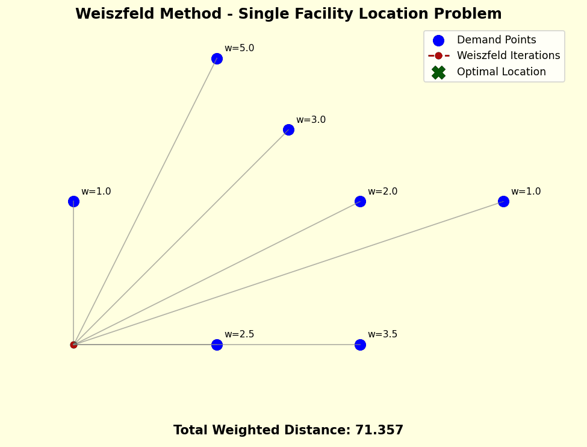

üöÄ Optimizing Facility Location with the Weiszfeld Method üè≠üìç
Ever wondered how companies decide where to set up a new warehouse, service center, or distribution hub? The answer lies in Facility Location Optimization — a powerful problem in operations research with real-world impact.
üîç Weiszfeld Algorithm, a classic yet elegant iterative method to find the optimal location that minimizes the weighted sum of distances to a set of demand points.
üí° Imagine multiple customer locations, each with a different demand/weight(w). The goal? Place a new facility so that the total transportation cost (weighted distance) is minimized.
✨ The Weiszfeld method works like magic:
Start with an initial guess (e.g., a centroid).
Iteratively re-calculate a weighted average, adjusting based on proximity.
Watch it converge beautifully to the optimal spot!
üìà The animated trajectory shows how the solution steps closer and closer to the best location. It’s simple, fast, and incredibly insightful for both teaching and practical use!
üîó Whether you're in supply chain, urban planning, or logistics, this method gives you a mathematically grounded, efficient way to make smarter decisions.
In the animation, the initial guess is assumed to be (1,1).
The Weiszfeld algorithm is an iterative method used to solve the single-facility location problem in a Euclidean space. It finds the optimal point \( x \in \mathbb{R}^2 \) that minimizes the weighted sum of distances to given demand points.
Given:
The objective is to minimize:
Starting from an initial guess \( x^{(0)} \), the location is updated iteratively:
Where:
The iterations stop when:
Where \( \varepsilon \) is a small positive tolerance value.
If at any point \( x^{(k)} = p_i \) for some \( i \), the denominator becomes zero. In such cases, the algorithm stops and returns \( x = p_i \) as the solution.
Let’s consider 3 demand points with equal weights:
| Point | Coordinates | Weight |
|---|---|---|
| \( p_1 \) | (1, 3) | 1 |
| \( p_2 \) | (4, 4) | 1 |
| \( p_3 \) | (5, 1) | 1 |
We start with the centroid:
Calculate distances:
Apply the Weiszfeld formula:
Repeat the computation using the new point until the change in \( x^{(k)} \) is less than the chosen tolerance \( \varepsilon \).
The algorithm computes a weighted average of the demand points, where closer and more heavily weighted points exert stronger influence. This leads to a balance point minimizing total travel cost.